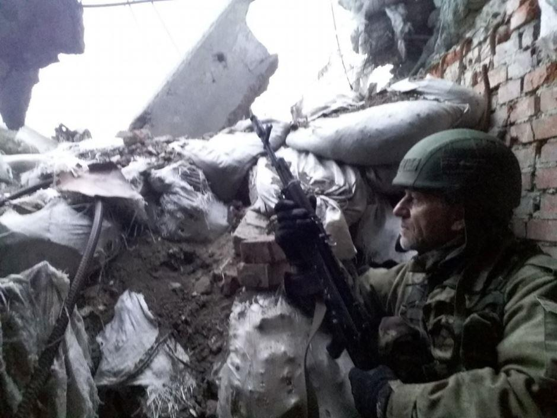

Les guerres suivent les évolutions des techniques (et souvent y participent) mais aussi des mentalités, en particulier lorsqu’il s'agit de conflits civils décidés par des puissances étrangères pour servir des intérêts exogènes, et la guerre n'appartient plus alors aux peuples qui la font et y sont sacrifiés. C'est le cas de cette guerre du Donbass décidée par la ploutocratie mondialiste et qui a désintégré une Ukraine, certes artificielle, mais dont les peuples aujourd'hui en guerre partageaient hier une destinée historique commune.
Depuis 5 ans, une guerre sévit à l'Est de l'Ukraine, semaine après semaine, jour et nuit, sans qu'aucune trêve ni cessez le feu ne parvienne à faire taire les armes plus de quelques heures sur les 300 kilomètres de front y compris pendant le temps de Noël ou traditionnellement la paix et l'espérance qu'il est sensé célébrer amène les hommes et les armes à se taire et même les mains à se tendre.
Imaginez, même pendant le premier conflit mondial, cette grande boucherie européenne qui fit entrer la guerre dans l'ère industrielle avec près de 20 millions de morts, les hommes respectaient cette trêve solsticiale et n'avaient pour cela nul besoin de ces ordres de cesser le feu qui aujourd'hui ne sont pas respecter.
Tous les témoignages des vétérans de la « Grande Guerre » mentionnent ces éclats d'humanité au milieu des orages d'acier, où les soldats boueux les visages rongés par la barbe et la fatigue sortaient des tranchées dans leurs uniformes déchirés pour échanger des cadeaux et des paroles fraternelles avec « ceux d'en face ». Bien sûr, quelques jours plus tard le feu et l'acier de la guerre projetaient à nouveau comme fétus de paille dans la tempête les hommes dans les vents violents de l'Histoire.
Aujourd'hui les guerres ont une toute autre apparence, participant à la déshumanisation de notre monde post-moderne où l'Homme n'est plus qu'une machine au service d'un système amoral qui lui fait perdre conscience jusqu'à la réalité des guerres civiles dans lesquelles il est sacrifié pour des intérêts d'une élite qui lui est encore plus étrangère que ne l'étaient celles des princes et des clercs pour lesquelles les hommes travaillaient combattaient et mourraient autrefois.
C'est Carl Schmitt, qui définissait le conflit (au sens général du terme) comme terreau du « Politis » qui considérait, après Nicolas Machiavel pour qui elle « était la continuité de la politique mais par d'autres moyens », que la guerre en est son « moyen extrême ».
« La guerre, disait Carl Schmitt, est loin d'être l'objectif, la fin voire la substance du politique, mais elle est cette hypothèse, cette réalité éventuelle qui gouverne selon son mode propre, la pensée et l'action des hommes, déterminant de la sorte un comportement spécifiquement politique ».
Or je pense que la détérioration morale de la guerre qui conduit aujourd'hui à des crimes de guerre étatiques, massifs et industriels, tels que les génocides ou les bombardements « ad principio » de pays non alignés et de leurs populations (déclinaison moderne de la « Jus ad bellum » des croisés) est la conséquence de la dérive pathologique de la politique aliéné à une bourgeoisie mondialiste et qui a engendré, bien au-delà des dictatures personnifiées de l'Histoire, ce totalitarisme amoral et apatride de la marchandise qui écrase autant les peuples qu'il méprise les lois qui permettaient au Politis, depuis des millénaires de fermentations idéologiques, de gérer les conflits inévitables qui sont inhérents aux divers domaines de l'activité sociétale humaine.
Je pense que l'inhumanité de la guerre est la conséquence de l'amoralité du pouvoir et se mesure non pas au nombre de vies qui y sont sacrifiées mais par la valeur de la conscience humaine qui y est broyée.
Ainsi de ce conflit du Donbass où certes et fort heureusement les hécatombes ne rivalisent pas avec celles de la première guerre mondiale, mais où nous observons 2 peuples issus de la même civilisation et qui hier encore faisaient partie d'une même nation s’entre-déchirer sur un front qui chaque jour tue et blesse des soldats et souvent également des civils vivant près du front. Alors que dans les tranchées de 14-18, les « tommies », les « fritz », les « hàsebock » étaient capables de se comprendre et même sans artager une langue commune de respecter Noël, aujourd'hui les « vatas » et surtout les « ukrops » ne réussissent pas à respecter depuis 5 ans la moindre petite trêve alors qu'ils partagent ensemble la même langue, des traditions communes et que même, si une différence identitaire a toujours existé de part et d'autre du Dniepr, ils vivaient ensemble avant la guerre.
Il y a cependant des exceptions qui confirment la règle observée dans le moment, malheureusement trop rares. Ainsi, sur le front de Promka, où la brigade Piatnashka tient des positions, dans la nuit du 31 décembre 2018 les belligérants qui ne sont qu'à quelques centaines de mètres les uns des autres ont dirigé ensemble des rafales de balles traçantes vers le ciel pour marquer la nouvelle année et le lendemain un silence des armes était observé scrupuleusement.
Aujourd'hui, la mécanisation de la guerre a fini par broyer tout, jusqu'à la conscience humaine des soldats qui désormais à de très rares exceptions de combat se tuent sans se voir, en dehors de vagues et petites silhouettes surprises dans la lunette de visée d'un sniper ou l'écran d'une télécommande d'un pilote de drone.
Le conflit du Donbass, comme tant de guerres du passé, est une guerre civile européenne qui déchire ici deux peuples d'une même nation témoignant, au-delà des frontières étatiques démesurées et artificielles, des échanges et fusions historiques et qui ont offert longtemps en héritage une même destinée à celles et ceux qui aujourd'hui s’entretuent entre Donetsk et Lugansk.
Ici, des villages, des familles, des amis sont séparées par la ligne de front, et sont même parfois déchirés par des engagements militaires familiaux opposés. Et peut-être cette intimité avec le conflit participe-t-elle paradoxalement à sa déshumanisation ?
Le fait est qu'aucune trêve, même la plus courte et la plus symbolique, est ici respectée par le frère ennemi ukrainien dont la propagande caricaturale cherche aujourd'hui, en plus des dizaines de milliers de morts et de blessés provoqués par son agression disproportionnée, a le séparer mentalement des populations de la Novorossiya.
Et malgré cette haine et cette guerre qui n'en finit pas, tandis que l'inquisition kiévienne efface méthodiquement toute trace culturelle ou historique russe en Ukraine, du côté de Donetsk, on enseigne toujours la langue ukrainienne et ses auteurs dans les écoles républicaines et les rues qui portent leurs noms ne sont pas débaptisées.
On pourrait certainement épiloguer longtemps et amèrement sur cette triste dégénérescence violente de la « Jus in bello » des anciens, que les occidentaux ont transformé la guerre en nouvelle « guerre sainte » pour les dogmes fallacieux des « droits de l'Homme » et de la « Démocratie » et qui finalement en diabolisant l'ennemi idéologiquement désigné empêche tout dialogue et résolution pacifique.
Je préfère, pour illustrer ce sentiment que j'ai tenté d'exprimer ici, partager le final du film « les sentiers de la gloire » de Stanley Kubrick (1957) et qui exprime mieux que moi et en quelques minutes tout le drame européen de ces guerres décidées par une finance internationale apatride qui sacrifie les peuples sur l'autel de ses intérêts.
Partager cette page